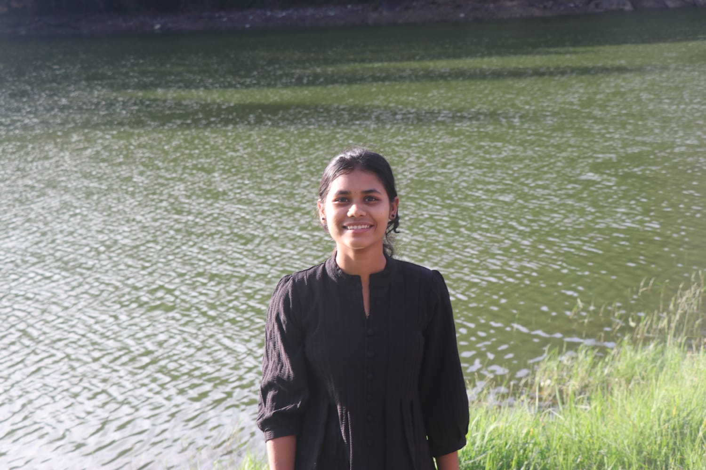
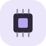
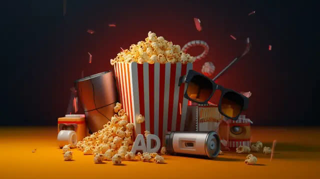
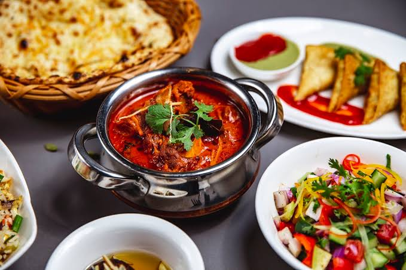
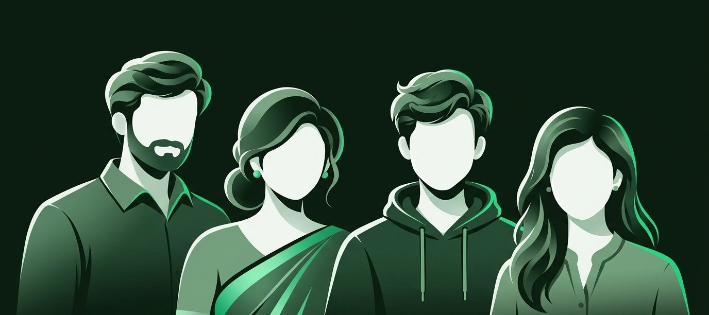

Higher Secondary (HSC)
St. Joseph Convent Higher Secondary School
Completed higher secondary with 83.83%, building the maths and science foundation for engineering.
Graduate Trainee at Psiog
ECE Graduate | Graduate Trainee at Psiog | Data & Web Enthusiast
I enjoy exploring emerging technologies, solving real-world problems, and building practical, reliable solutions, while continuously learning and growing as a professional.

01 Professional Journey
School, engineering, three internships, two projects I'm proud of, and my first job.
St. Joseph Convent Higher Secondary School
Completed higher secondary with 83.83%, building the maths and science foundation for engineering.
Amrita College of Engineering and Technology
Graduated with a CGPA of 8.10, with a growing pull towards programming, data and problem solving.
Alongside core ECE subjects I built skills in Python, object-oriented programming, data structures and algorithms (basics) and introductory machine learning. I also completed Python for Beginners (Udemy) and attended workshops on Tableau and on 3D Printing & Robotics.

Matt Engineering Solutions
Learned the foundations of embedded systems and microcontroller programming.
Understood system-level behaviour and how hardware and software components are integrated into a working product.
Besant Technologies
Gained hands-on data analytics experience with Excel and Power BI.
Performed data visualisation and analysis to draw meaningful insights from real datasets.
AK InfoPark Private Limited
Learned web development fundamentals with HTML and CSS.
Understood application flow, UI structure and basic front-end development concepts, which this website builds on.
Psiog
Joined on 17 August 2026. I'm building a strong foundation in professional software development, learning industry best practices, and gaining hands-on experience in delivering quality, real-world solutions.
The two projects I'm proudest of, and how each one works.
Final-year project · IoT + Machine Learning
A real-time system that reads EEG signals through an ESP32 and uses machine-learning classification in Python to tell alert and micro-sleep states apart. When micro-sleep is detected, a ThingSpeak cloud alert goes out: an end-to-end healthcare monitoring solution.
How it works
Data analytics project · Power BI
An interactive Power BI dashboard that turns raw datasets into trends, patterns and actionable insights. Filters, charts and KPIs make the data easy to interpret, and building it strengthened my grasp of data-driven decision-making.
How it works
02 Personal Likings
Melodies on repeat, a good mystery, and a plate of something spicy.
Melody songs are my constant companion: on the commute, while cooking, and while coding.

Give me a twist I didn't see coming. Action, thriller, crime, mystery and adventure are my genres.

A proud non-veg food lover. The spicier and more flavourful, the better.
A habit I've recently started and am enjoying more with every page. I'm currently reading The Silent Patient by Alex Michaelides, a gripping psychological thriller.
Hill stations and new cities are on my bucket list, along with plenty of new food to try there.
Where my degree meets my curiosity: wiring sensors to microcontrollers and turning raw numbers into dashboards.
03 Family
The ones who cheer the loudest. Tap or hover a card to read more.

04 Hobbies & Passions
Cooking, badminton, music, gardening and time with the people I love: the things that recharge me. Click any tile to open it.